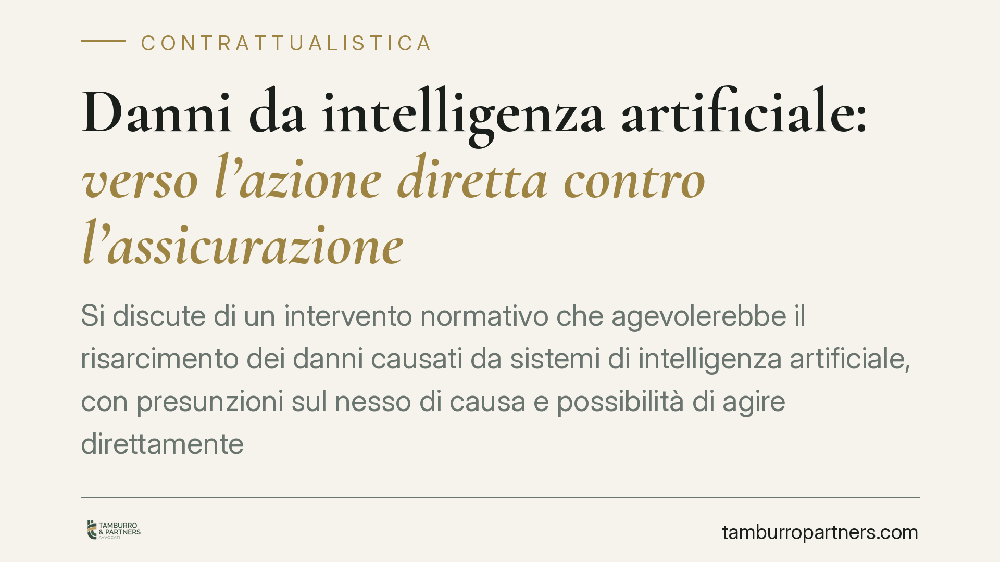

Danni da intelligenza artificiale: verso l'azione diretta contro l'assicurazione
Si discute di un intervento normativo che agevolerebbe il risarcimento dei danni causati da sistemi di intelligenza artificiale, con presunzioni sul nesso di causa e possibilità di agire direttamente contro l'assicuratore. Il quadro non è ancora definitivo. Vediamo cosa cambierebbe per vittime, imprese e assicuratori, e dove restano vuoti importanti.

Di cosa stiamo parlando
È in discussione una riforma della responsabilità civile per i danni provocati da sistemi di intelligenza artificiale. L'obiettivo dichiarato è alleggerire la posizione probatoria della vittima e velocizzare il ristoro economico.
Una precisazione preliminare, doverosa. Alcuni riferimenti circolati sulla stampa — in particolare numero, data e articoli del decreto attuativo — non risultano ad oggi verificabili in Gazzetta Ufficiale. Per correttezza verso il lettore, trattiamo la materia in termini prospettici: descriviamo i meccanismi previsti dallo schema di riforma, non norme di cui si possa affermare con certezza l'entrata in vigore. Ogni valutazione operativa andrà aggiornata alla pubblicazione del testo definitivo.
Inquadramento normativo
Occorre distinguere due piani, spesso confusi.
Il Regolamento (UE) 2024/1689, noto come *AI Act*, disciplina i requisiti di sicurezza, trasparenza e conformità dei sistemi di IA, con obblighi graduati in base al rischio. Non regola, invece, la responsabilità civile per i danni: non stabilisce chi paga né come si prova il danno. È un errore ricorrente attribuirgli questa funzione.
La disciplina risarcitoria appartiene al diritto nazionale. A livello europeo era stata proposta una direttiva dedicata alla responsabilità da IA (*AI Liability Directive*), poi non giunta a compimento. Da qui l'intervento del legislatore interno, che dovrebbe innestarsi sul sistema del Codice civile in materia di responsabilità del produttore e responsabilità extracontrattuale.
Cosa cambierebbe in concreto
Il cuore della riforma è l'agevolazione probatoria. Oggi chi subisce un danno deve dimostrare il difetto del prodotto, il danno e il collegamento causale tra i due. Con sistemi opachi — reti neurali di cui nemmeno il produttore ricostruisce sempre il funzionamento interno — questa prova è spesso impossibile.
La riforma interverrebbe su due leve.
La prima è la presunzione del nesso causale: al ricorrere di certe condizioni (ad esempio violazione degli obblighi di sicurezza), il collegamento tra malfunzionamento e danno si presume, salvo prova contraria a carico dell'impresa. In sostanza l'onere si sposta: non è più la vittima a dover ricostruire la catena tecnica, ma l'operatore a doverla smentire.
La seconda è l'azione diretta contro l'assicuratore: la vittima potrebbe rivolgersi subito alla compagnia che copre il rischio, senza attendere l'esito del contenzioso con l'impresa. Un modello già noto nella circolazione stradale.
Implicazioni per i diversi soggetti
Per le vittime, il vantaggio è evidente: meno prova tecnica da fornire e un debitore solvibile a cui rivolgersi. Attenzione però al foro competente. Il cosiddetto foro del consumatore — che consente di radicare la causa nel luogo di residenza — opera solo nei rapporti tra impresa e consumatore (B2C). Nelle liti tra imprese (B2B) valgono le regole ordinarie sulla competenza, spesso con clausole contrattuali che spostano il foro altrove.
Per imprese produttrici e operatori, cambia la strategia difensiva. Se il nesso si presume, la difesa si gioca sulla documentazione: log di funzionamento, tracciabilità delle decisioni del sistema, prova del rispetto degli obblighi di sicurezza dell'AI Act. Chi non documenta, non si difende.
Per gli assicuratori, l'azione diretta anticipa l'esborso e sposta a valle il recupero verso il responsabile effettivo. Prevedibile un ripensamento delle polizze e delle condizioni di copertura per il rischio IA.
Il versante penale e il vuoto sui sistemi autonomi
Sul piano penale i problemi restano aperti. Il diritto penale richiede un elemento soggettivo — dolo o colpa — riferibile a una persona fisica. Individuare *chi* ha agito con colpa quando un sistema autonomo produce un evento dannoso è tutt'altro che semplice: sviluppatore, addestratore, operatore o utente finale possono avere ruoli diversi e non sovrapponibili.
Resta poi scoperto il nodo dei sistemi pienamente autonomi, capaci di decisioni non prevedibili dal programmatore. Le categorie tradizionali — difetto, colpa, prevedibilità — faticano ad applicarsi. Su questo la riforma, allo stato, non offre risposte compiute. È un limite che va segnalato con franchezza.
Cosa fare in concreto
- Mappare i sistemi di IA utilizzati in azienda e il rispettivo profilo di rischio ai sensi dell'AI Act.
- Predisporre e conservare log, tracciamenti e documentazione tecnica: sono la prova su cui si reggerà ogni difesa.
- Verificare le coperture assicurative esistenti e la loro idoneità a includere il rischio da IA.
- Rivedere i contratti con fornitori terzi, definendo con chiarezza ripartizione di responsabilità e regresso.
- Attendere il testo definitivo prima di qualsiasi scelta strutturale: la disciplina non è ancora consolidata.
Disclaimer
Contributo informativo a cura di Tamburro & Partners - Avv. Giuseppe Tamburro. Non costituisce parere legale.
Ogni contratto ha il suo equilibrio.
Se vuoi una revisione delle clausole o una redazione su misura, scrivi allo studio. Ti rispondiamo entro un giorno lavorativo.